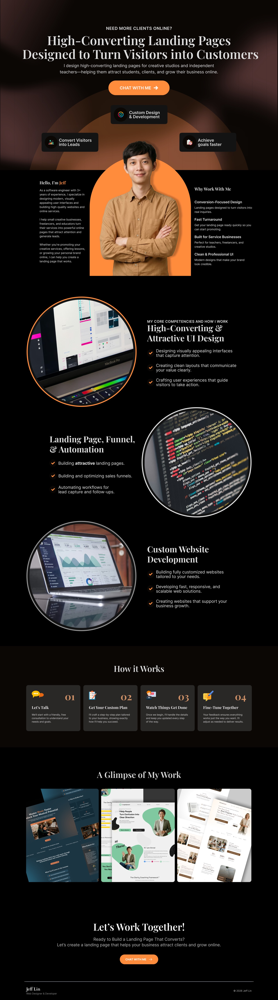
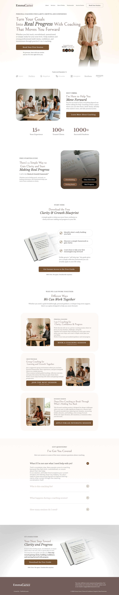
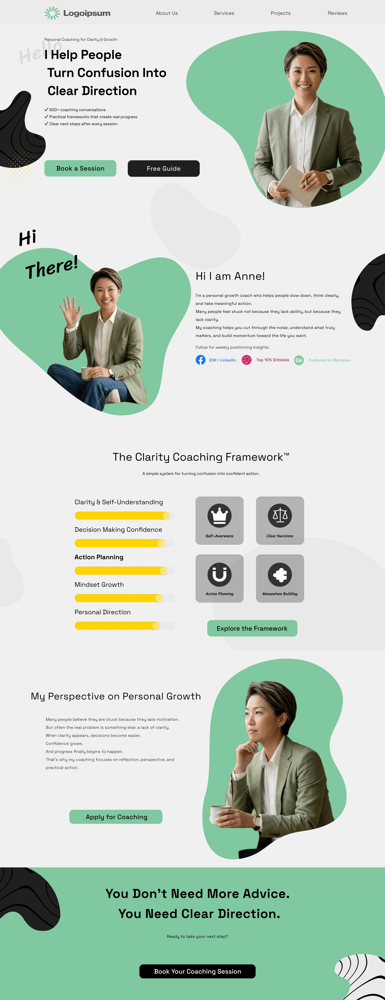
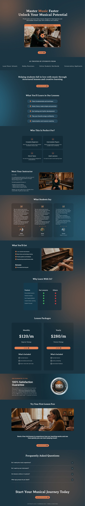
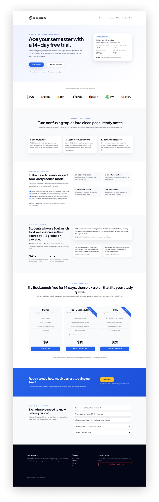

建立信任
品牌官網建置
建立清楚可信任的公司形象，整理服務內容、品牌資訊、聯絡入口與基本 SEO。
網站設計 · Landing Page · 客製化網站系統
TWOIN 協助企業與店家整理需求、設計頁面、規劃轉換流程，做出真正能被使用的網站工具。
本月詢問
+38% 表單與 CTA 優化一頁式轉換流程
核心服務
建立信任
建立清楚可信任的公司形象，整理服務內容、品牌資訊、聯絡入口與基本 SEO。
提高轉換
針對廣告、活動、產品或服務設計高聚焦頁面，讓訪客更容易留下名單或預約。
設計漏斗
規劃從流量、頁面、表單到後續聯繫的轉換流程，讓行銷不是只有曝光。
支援營運
依照營運流程開發會員、預約、訂單、後台管理、資料收集等網站系統。
作品展示





可建置情境
把紙本菜單轉成手機點餐流程，減少人工確認與手寫錯誤。
讓客戶選擇服務、留下聯絡方式，後台集中管理預約需求。
用 Landing Page 說清楚課程價值，並把報名資料整理成可追蹤名單。
從服務介紹、案例說明、表單篩選到後續聯繫，建立完整諮詢流程。
問題變成系統
適合餐飲店、診所、課程品牌、在地店家和中小企業。只要流程可以被整理，就有機會做成網站工具。
技術與上線能力
合作流程
確認目標、受眾、功能和預算範圍。
整理頁面架構、功能範圍與交付內容。
製作畫面、前後端功能與表單流程。
檢查手機版、速度、表單與追蹤設定。
合作後應該感受到
「我知道這個網站要解決什麼問題，也知道下一步怎麼推進。」
「服務、流程、表單與後台不是分散的，而是被整理成一個完整體驗。」
「畫面有質感，但更重要的是能支援實際獲客與營運。」
開始討論
不需要一開始就把規格想完整。先描述你目前遇到的問題、想達成的目標和預計上線時間，我們會協助整理成可執行的網站方案。